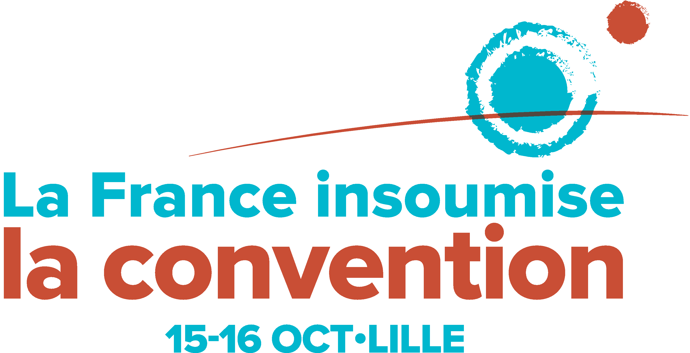

La première convention de la France insoumise aura lieu à Lille les 15 et 16 octobre. Elle réunira près d'un millier de personnes représentatif du mouvement qui s'est constitué depuis la proposition de candidature de Jean-Luc Mélenchon.
Dans la lignée du défilé de la France insoumise qui s'était réuni à Paris le 5 juin dernier, elle permettra des témoignages de celles et ceux qui sont la France insoumise : syndicalistes, lanceurs d'alertes, militants pour la défense de l'environnement, universitaires, philosophes, personnalités du monde de l'art et de la culture, etc ...
Elle constituera également une étape dans la construction du programme "L'avenir en commun" qui sera celui de la France insoumise aux élections présidentielles et législatives. Ainsi, elle permettra d'identifier les priorités programmatiques de la campagne et enclenchera une phase de construction de livrets thématiques qui préciseront nos propositions sur près de 40 sujets.
Enfin, elle sera l'occasion pour les insoumis de toute la France de réfléchir collectivement aux méthodes et outils nécessaire pour faire progresser la France insoumise : élargissement du mouvement, collecte des 500 parrainages, financement de la campagne, identification des 577 candidats qui porteront les couleurs du mouvement aux élections législatives.
La convention sera un moment inédit dans une campagne électorale. Les deux tiers de ses participants ont été désignés par tirage au sort parmi les plus de 130000 personnes qui soutiennent à cette heure la candidature de Jean-Luc Mélenchon. Le tiers restant réunira des actrices et des acteurs des insoumissions sociales, écologiques ou démocratiques, des universitaires, des personnalités du monde de l'art et de la culture et des représentants des groupes politiques qui soutiennent le mouvement.
Tout au long de la convention, des témoignages, des interventions, des extraits vidéos ou musicaux se succéderont, organisés autour des urgences auxquelles est aujourd'hui confrontées notre pays. Des temps d'échanges collectifs en table de 6 personnes seront organisés afin de favoriser la participation active de l'ensemble des membres de la convention.
Tout au long des deux journées, une retransmission sur internet et un dispositif interactif permettront la participation aux débats, par l'intermédiaire des réseaux sociaux, de toutes celles et ceux qui s'intéressent à notre démarche.
Enfin, une consultation autour des priorités programmatiques de la campagne, ouverte aux plus de 130000 signataires, se déroulera entre l'ouverture et la clôture de la convention.